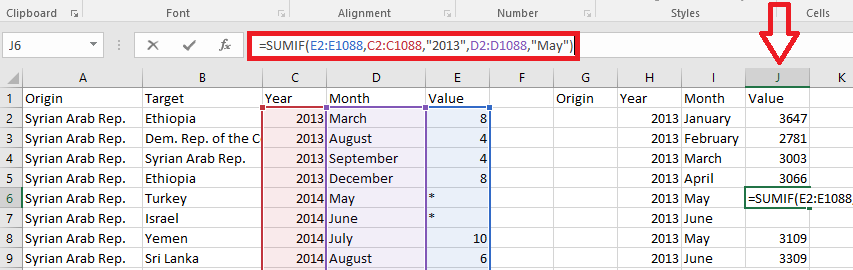

The data for this project was obtained from the United Nations High Commissioner for Refugees (UNHCR) and the UN Data Portal. As both sources exclusively provide country-to-country refugee flow statistics per year, additional data processing was conducted in both Excel and Trifacta Wrangler.
Below, data is condensed in Excel as the SUMIF() function is used to combine 'Values' from column E only if column C and D have matching 'Year' and 'Month' values, respectively. As such, the result in cell J6 will be equal to the number of refugees that fled the Syrian Arab Republic in May 2013. Instead of working with single digit refugee flows, the processed data allows us to better understand the refugee crisis and create more meaningful visualizations.

The refugee statistics organized above by month in column J were used in the heat map visualization. While the geospatial visualization of total hosted refugees by country in 2013 used similar data processing, nodes (country names) and links (refugee flow values) were extracted by hand and reorganized for the sankey particle flow visualization. Country IDs were assigned according to internationally recognized country codes.